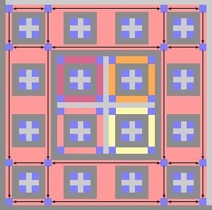
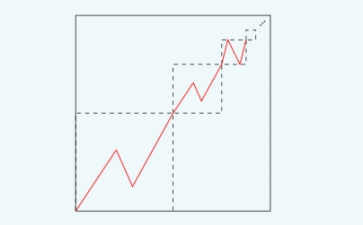

Silvère Gangloff

Silvère Gangloff
2019-. Post-doctoral researcher at University of Madison-Wisconsin, Center for sleep and consciousness,
with Prof. G. Tononi.
2018-2019. Post-doctoral researcher at LIP, ENS Lyon,
working with
Nathalie Aubrun and
Michael Rao in the ANR project CoCoGro.
2015-2018. Ph.D. in Mathematics and Theoretical computer
science: Algorithmic complexity
of growth-type invariants of multidimensional SFT under
dynamical constraints, under supervision of
Mathieu Sablik.
2011-2015. ENS Paris: Studies in mathematics,
biology, and history ; Master of mathematics;
Agrégation de mathématiques.
More details:
Curiculum vitae.
Mail: first.last@gmx.com
Publications:

With
Mathieu Sablik: Quantified block gluing, aperiodicity and entropy of multidimensional SFT.
Accepted for publication in Journal d'Analyse mathématique [
arXiv].
In this text, we relate a computational transition
effect for the entropy of bidimensional subshifts of finite type for a quantified version of a mixing-type property.
By computational transition, I mean that when this quantity (the minimal distance of mixing) is
sufficiently small, entropy is algorithmically computable, and it is uncomputable (more precisely, the possible values of entropy
are characterized as the non-negative numbers that are computable from above)
when the quantity is sufficiently large. For the uncomputable area, we ameliorate M.Hochman and T. Meyerovitch's construction (itself
an amelioration of R.Robison's construction embedding Turing computations into a hierarchical aperiodic SFT).
In order to adapt the construction to the mixing-type property, we introduce many tools and gadgets that
mainly let Turing machines and all the architecture allowing their implementation to have more chaotic
behaviors. In later constructions on SFTs with minimality property, we re-used these tools. Let us
also note that there is, between this construction and the one of M.Hochman and T. Meyerovitch, an increase in
complexity in terms of interacting gadgets, that brought to my mind the idea of an analogy with biological
systems. In my doctoral thesis, I developped this analogy mechanism by mechanism.

With
Benjamin Hellouin: Effect of quantified irreducibility
on subshifts entropy.
Discrete and Continuous Dynamical Systems, 2018 [
arXiv].
Ideally, we would like to make the transition area more precise for bidimensional SFT.
However, this problem seems quite hard, in particular since it is difficult to find
exemples of SFT in this area. With Benjamin, we studied the same problem
for a more flexible class of bidimensional subshifts, those whose language is decidable.
With quite some efforts, we were able to characterize a threshold
with a summability condition on the mixing gap function. The proof
involves an ingenius extension of existing arguments for the part below the threshold.
For the part above, we code one-dimensional subshifts on alphabet {0,1} defined
by a sequence of restrictions on the possible number
of 1 symbols in length n words for all n, making use of an approximation of the change in entropy induced
by a perturbation in the sequence of restrictions.
A
presentation of this article

With
Mathieu Sablik: A characterization
of the possible entropy dimensions of minimal Z^3-SFT. Submitted [
arXiv].
The minimality constraint (which force any pattern to appear in any configuration)
was known to break all the constructions embedding Turing computations into SFTs
on many points. In this text, we achieve an adaptation to this embedding to
minimality constraints. The main idea is to use counters to alternate
all the possible local behaviors of the machines and the embedding architecture. For
this purpose, we needed these possible behaviors to be easily descriptible and determined with
a set of bits that would be part of the counter's state. That is where we re-used
the tools developped for mixing SFT constructions. Moreover, we needed to force
the counter to have co-prime periods, without the use of a Turing machine with
a general formulation (without which we would end in an endless loop of simulation of
the simulation, etc). For this purpose, we introduce in the counter
a non-coding part (triggering an analogy with DNA) and a suspension mechanism
which allow the counters to have Fermat numbers as periods. Golbach's theorem
ensures that these numbers are all co-prime.

With
Mathieu Sablik: Simulation of minimal effective dynamical systems on the Cantor
set by minimal tridimensional SFT. Submitted [arXiv].
In this text, we explore further the effect of minimality on "dense" computation. This means that, unlike
the recent constructions of minimal multidimensional subshifts of finite type by B. Durand and A. Romashchenko,
which use a sparse way to implement machines into the subshifts in order to ensure the minimality, we keep
the implementation dense.
We use the tools developed for the characterization of entropy dimensions of minimal tridimensional
SFT, in order to provide a simulation theorem of dynamical systems on the
Cantor sets which is robust to minimality constraint.
The idea is to encode sequences of the Cantor set in hierarchical structures and make machines control evolution
of sequences in a fixed direction. One specific aspect of the construction is that it makes appear
a one dimensional full shift degenerated behavior. We thus developped a way to simulate this, using back Fermat number
period counters. Moreover, the implementation is done in two dimensional sections, and it needs functional specialisation
of the computing units in order to not break the minimality.

A proof that square ice entropy is 3/2 log_2(4/3). Submitted [arXiv].
In this text, I provide a complete proof of E.H.Lieb's statement that square ice entropy is 3/2 * log_2(4/3). Although most of
the material was already developped, writting down such a proof was difficult, since the argumentation was partial,
but also because of the form of the literature on the subject. I attempt to explain the difficulties that are specific
to a mathematical work at the interface betweeen mathematics and physics using the concept of discursive formation, developped
by M. Foucault in the Archaeology of knowledge.
From algebraic to coordinate Bethe ansatz for square ice. Submitted [arXiv].
In this other article on square ice, I review the Algebraic Bethe ansatz, which provides a method for deriving
candidate eigenvectors of Lieb transfer matrices of square ice. In particular,
I prove a formula of V.E. Korepin which leads to an identification with the eigenvectors provided by the coordinate version
of the ansatz. By contrast with the coordinate Bethe ansatz,
on which relies the proof of the value of square ice entropy, the elements of this method can be generalized
to the whole class of nearest-neighbour subshifts of finite type.
A
presentation of these articles.

With Alonso Herrera,
Cristobal Rojas and
Mathieu Sablik: On the computability properties of topological entropy: ageneral approach. Preprint [arXiv]
In this text, we export from symbolic dynamics the problem of evaluating the computability of entropy to the more general
topological dynamics. We use computable analysis to provide a frame for this problem and prove that the entropy
of a computable system is always a Sigma_2-computable number. This uniform bound on computability
leads to the notion of entropy-completeness for classes of dynamical systems, meaning that all Sigma_2-computable
number is the entropy of a system in the class. Considering various class of systems (on the Cantor set or
on the unit interval) in general defined by dynamical constraints, we prove else entropy-completeness for some
of them. Otherwise, we characterize the possible values of entropy on the class.